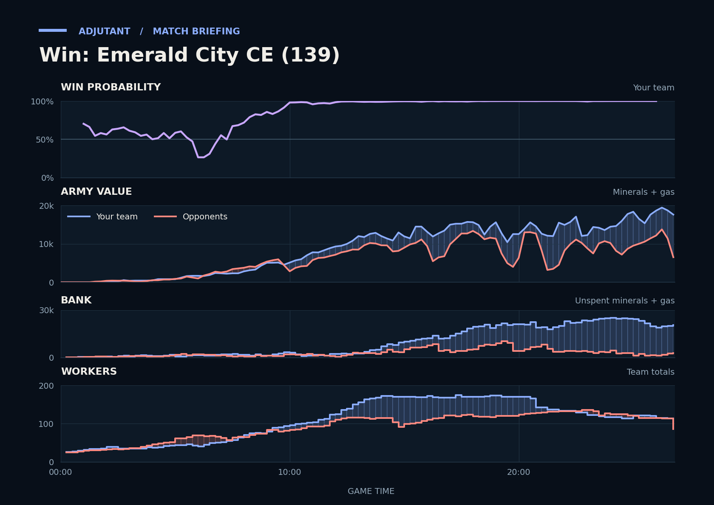

Win: Emerald City CE (139)
Provisional debrief. The full report (timeline, insights and analysis) is being generated.

**Win.** In the last fight at HaiLRaiser's third, Scallop's Battlecruisers went in with the larger army, and HaiLRaiser lost about 11 times as much army as Scallop.
**Why**
- 6:34–7:44: Scallop's Banshees raided workers, cutting HaiLRaiser to a low of 13 workers.
- 9:06–10:21: The duo killed about 4,700 of MicroPhelps's army at their bases for far less lost, leaving that army at a low.
- 26:24–26:48: Scallop's Battlecruisers killed 29 Probes and wiped out HaiLRaiser's army while losing a Battlecruiser; HaiLRaiser typed gg.